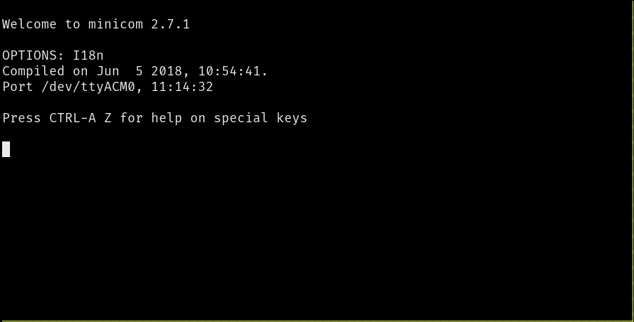
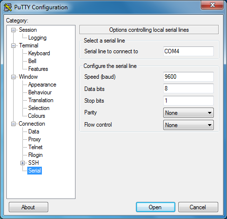
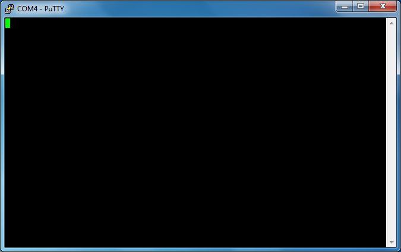

Serial Communication
{kind=link}
Đây là thứ chúng ta sẽ dùng. Hy vọng máy tính của bạn có một cái!
Đùa thôi, đừng lo. Đầu nối này, DE-9, đã lỗi thời trên PC từ khá lâu rồi; nó đã bị thay thế bởi Universal Serial Bus (USB). Chúng ta sẽ không làm việc với bản thân đầu nối DE-9 mà là với giao thức truyền thông mà cáp này thường được dùng.
Vậy serial communication là gì? Đó là một giao thức truyền thông bất đồng bộ (asynchronous) trong đó hai thiết bị trao đổi dữ liệu theo kiểu nối tiếp (serial), tức là từng bit một, sử dụng hai đường dữ liệu (cộng thêm đường ground chung). Giao thức này bất đồng bộ theo nghĩa là không có đường nào trong các đường chia sẻ mang tín hiệu clock. Thay vào đó, cả hai bên phải thỏa thuận trước về tốc độ gửi dữ liệu trên đường dây trước khi giao tiếp diễn ra. Một thiết bị (UART) gửi các bit ở tốc độ được chỉ định trên đường truyền (output) của nó, và đợi bit bắt đầu (start bit) trên đường nhận (input) của nó.
Giao thức này cho phép truyền thông song công (duplex) vì dữ liệu có thể được gửi từ A sang B và từ B sang A đồng thời.
Chúng ta sẽ dùng giao thức này để trao đổi dữ liệu giữa microcontroller và máy tính của bạn. Bây giờ bạn có thể tự hỏi tại sao chúng ta không dùng RTT cho việc này như trước. RTT là giao thức được thiết kế chỉ dành cho debugging. Bạn gần như chắc chắn sẽ không tìm thấy thiết bị nào thực sự dùng RTT để giao tiếp với thiết bị khác trong sản xuất. Tuy nhiên, serial communication được dùng khá thường xuyên. Ví dụ, một số GPS receiver gửi thông tin định vị mà chúng nhận được thông qua serial communication. Hơn nữa, RTT, giống như nhiều giao thức debugging khác, khá chậm so với tốc độ truyền tải của serial.
Câu hỏi thực tế tiếp theo bạn có lẽ muốn hỏi là: Chúng ta có thể gửi dữ liệu qua giao thức này nhanh đến mức nào?
Giao thức này hoạt động với các frame. Mỗi frame có một start bit, 5 đến 9 bit payload (dữ liệu) và 1 đến 2 stop bit. Tốc độ của giao thức được gọi là baud rate và được đo bằng bits per second (bps). Các baud rate phổ biến là: 9600, 19200, 38400, 57600 và 115200 bps.
| Phần | Số bit | Mô tả |
|---|---|---|
| Start bit | 1 | Luôn là logic 0 — báo hiệu bắt đầu frame |
| Data bits | 5–9 (thường là 8) | Dữ liệu, gửi theo thứ tự LSB trước |
| Parity bit | 0 hoặc 1 (tùy chọn) | Kiểm tra lỗi (thường bỏ qua — "N") |
| Stop bit(s) | 1 hoặc 2 | Luôn là logic 1 — báo hiệu kết thúc frame |
Để thực sự trả lời câu hỏi: Với cấu hình phổ biến gồm 1 start bit, 8 bit dữ liệu, 1 stop bit và baud rate 115200 bps, về lý thuyết có thể gửi 11.520 frame mỗi giây. Vì mỗi frame mang một byte dữ liệu, kết quả là tốc độ dữ liệu 11.52 KB/s. Trong thực tế, tốc độ dữ liệu có thể sẽ thấp hơn do thời gian xử lý ở phía chậm hơn của giao tiếp (microcontroller).
| Baud rate (bps) | Thông lượng lý thuyết | Ứng dụng điển hình |
|---|---|---|
| 9600 | ~960 B/s | GPS, cảm biến cũ |
| 19200 | ~1.9 KB/s | Cảm biến công nghiệp |
| 38400 | ~3.8 KB/s | – |
| 57600 | ~5.6 KB/s | – |
| 115200 | ~11.5 KB/s | Debug console, module Bluetooth |
Máy tính ngày nay thường không có cổng serial, và ngay cả khi có, mức điện áp chúng dùng (+5V trên cổng serial hiện đại, ±12V trên cổng RS-232 cổ) nằm ngoài giới hạn chịu đựng của phần cứng MB2 và có thể gây hỏng hóc. Vì vậy bạn không thể kết nối trực tiếp máy tính với microcontroller.

May mắn cho chúng ta, debug probe trên micro:bit có một bộ chuyển đổi gọi là USB-to-serial converter. Điều này có nghĩa là bộ chuyển đổi sẽ nằm giữa hai thiết bị và cung cấp giao diện serial cho microcontroller và giao diện USB cho máy tính. Microcontroller sẽ thấy máy tính của bạn như một thiết bị serial khác và máy tính sẽ thấy microcontroller như một thiết bị serial ảo.
Bây giờ, hãy làm quen với serial module và các công cụ serial communication mà hệ điều hành của bạn cung cấp. Chọn đường đi phù hợp:
Công cụ trên *nix (Linux/macOS)
Kết nối board micro:bit
Nếu bạn kết nối board micro:bit vào máy tính, bạn sẽ thấy một thiết bị TTY mới xuất hiện trong /dev.
$ # Linux
$ dmesg | grep -i tty
[63712.446286] cdc_acm 1-1.7:1.1: ttyACM0: USB ACM deviceĐây là thiết bị USB ↔ Serial. Trên Linux, nó có tên tty* (thường là ttyACM* hoặc ttyUSB*). Trên Mac OS, ls /dev/cu.usbmodem* sẽ hiển thị thiết bị serial.
Nhưng chính xác ttyACM0 là gì? Tất nhiên là một file! Mọi thứ đều là file trong *nix:
$ ls -l /dev/ttyACM0
crw-rw----. 1 root plugdev 166, 0 Jan 21 11:56 /dev/ttyACM0Bạn có thể gửi dữ liệu bằng cách đơn giản ghi vào file này:
$ echo 'Hello, world!' > /dev/ttyACM0Bạn sẽ thấy LED màu cam trên micro:bit, ngay cạnh cổng USB, nhấp nháy một chút mỗi khi bạn nhập lệnh này.
minicom
Chúng ta sẽ dùng chương trình minicom để tương tác với thiết bị serial bằng bàn phím.
Chúng ta cần cấu hình minicom trước khi dùng. Có khá nhiều cách để làm điều đó nhưng chúng ta sẽ dùng file .minirc.dfl trong thư mục home. Tạo file ~/.minirc.dfl với nội dung sau:
$ cat ~/.minirc.dfl
pu baudrate 115200
pu bits 8
pu parity N
pu stopbits 1
pu rtscts No
pu xonxoff NoLƯU Ý: Đảm bảo file này kết thúc bằng dòng mới (newline)! Nếu không, minicom sẽ không đọc được nó.
File đó khá dễ hiểu (trừ hai dòng cuối), nhưng hãy đi qua từng dòng:
pu baudrate 115200. Đặt baud rate thành 115200 bps.pu bits 8. 8 bit mỗi frame.pu parity N. Không kiểm tra parity.pu stopbits 1. 1 stop bit.pu rtscts No. Không dùng hardware control flow.pu xonxoff No. Không dùng software control flow.
Khi đã sẵn sàng, chúng ta có thể khởi động minicom.
$ # LƯU Ý: bạn có thể cần dùng thiết bị khác ở đây
$ minicom -D /dev/ttyACM0 -b 115200Lệnh này nói cho minicom mở thiết bị serial tại /dev/ttyACM0 và đặt baud rate thành 115200. Một giao diện người dùng dạng văn bản (TUI) sẽ xuất hiện.

Bây giờ bạn có thể gửi dữ liệu bằng bàn phím! Hãy thử gõ gì đó. Lưu ý rằng giao diện sẽ không hiển thị lại (echo) những gì bạn gõ. Tuy nhiên, nếu bạn chú ý đến LED vàng phía trên micro:bit, bạn sẽ thấy nó nhấp nháy mỗi khi bạn gõ.
Các lệnh minicom
minicom cung cấp các lệnh thông qua phím tắt. Trên Linux, các phím tắt bắt đầu bằng Ctrl+A. Trên Mac, các phím tắt bắt đầu bằng phím Meta. Một số lệnh hữu ích:
Ctrl+A+Z: Tóm tắt các lệnh MinicomCtrl+A+C: Xóa màn hìnhCtrl+A+X: Thoát và resetCtrl+A+Q: Thoát mà không reset
LƯU Ý cho người dùng Mac: Trong các lệnh trên, thay Ctrl+A bằng Meta.
Công cụ trên Windows
Bắt đầu bằng cách rút micro:bit ra.
Trước khi cắm micro:bit, chạy lệnh sau trên terminal:
$ modeNó sẽ in ra danh sách các thiết bị đang kết nối với máy tính. Những thiết bị có tên bắt đầu bằng COM là thiết bị serial. Đây là loại thiết bị chúng ta sẽ làm việc. Ghi lại tất cả các cổng COM mà mode hiển thị trước khi cắm serial module.
Bây giờ, cắm micro:bit vào và chạy lệnh mode lần nữa. Nếu bạn thấy một cổng COM mới xuất hiện trong danh sách, thì đó là cổng COM được gán cho chức năng serial trên micro:bit.
Bây giờ khởi động putty. Một giao diện đồ họa sẽ xuất hiện.

Trên màn hình khởi động (category "Session"), chọn "Serial" làm "Connection type". Trong trường "Serial line", nhập thiết bị COM bạn tìm được ở bước trước, ví dụ COM3.
Tiếp theo, chọn category "Connection/Serial" từ menu bên trái. Trong giao diện mới này, đảm bảo rằng serial port được cấu hình như sau:
- "Speed (baud)": 115200
- "Data bits": 8
- "Stop bits": 1
- "Parity": None
- "Flow control": None
Cuối cùng, nhấn nút Open. Một console sẽ xuất hiện.

Nếu bạn gõ trên console này, LED vàng phía trên micro:bit sẽ nhấp nháy. Mỗi phím bấm sẽ làm LED nhấp nháy một lần. Lưu ý rằng console sẽ không hiển thị lại những gì bạn gõ nên màn hình sẽ vẫn trống.
RS-232 — Lịch sử (tùy chọn)
Đây là phần tùy chọn, nhưng sẽ hữu ích khi bạn nói chuyện với người khác về serial communication.
RS-232 (Revised Standard 232) ra đời khoảng năm 1960, là chuẩn serial port lâu đời nhất. Nó được thiết kế để kết nối modem (Data Communications Equipment — DCE) với terminal (Data Terminal Equipment — DTE), mỗi chiều một dây.
RS-232 ban đầu dùng đầu nối 25 chân với mức điện áp kỳ lạ: -12V cho logic cao, +12V cho logic thấp — tiêu chuẩn của ngành điện thoại cũ. Tốc độ truyền ban đầu từ 300 đến 9600 bps, phù hợp với modem thời đó.
{kind=link}
Qua nhiều năm, chuẩn được đơn giản hóa: IBM PC AT đưa vào dùng đầu nối 9 chân (DE-9), điện áp giảm về 0V/+5V và 0V/+3.3V, và cuối cùng chỉ còn 3 dây cần thiết: TX (transmit), RX (receive), và GND.
USB cuối cùng thay thế RS-232 trên máy tính tiêu dùng. Để dễ dàng chuyển đổi, Microsoft thiết kế lớp thiết bị USB CDC-ACM (Communications Device Class - Abstract Control Model) để tương thích ngược với modem RS-232. Đó là lý do tại sao khi bạn cắm micro:bit vào máy tính, nó hiện ra như một thiết bị ttyACM* hoặc COM* — một cổng serial ảo qua USB.